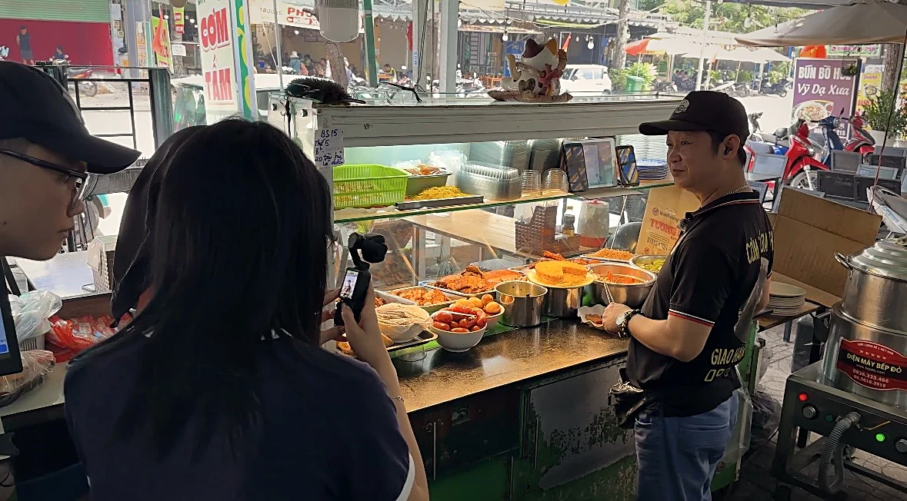

Theo anh, điều gì làm nên một dĩa cơm tấm ngon?
“Nằm ở miếng sườn. Sườn phải ướp từ sớm, nướng than mới ra mùi khói. Còn hạt tấm thì hấp sao cho tơi, đừng nhão.”
Món nào khách gọi nhiều nhất?
“Sườn bì chả trứng, đủ bộ. Ai ăn lần đầu anh cũng hay chỉ phần đó, ăn rồi mới biết mình thích món nào nhất.”
Khách của quán thường là ai?
“Sinh viên với người đi làm quanh đây. Có mấy đứa ăn từ hồi năm nhất tới lúc ra trường, giờ quay lại vẫn gọi đúng phần cũ.”
Lúc nghe tụi em xin quay phim ở quán, anh nghĩ sao?
“Thấy vui chứ. Mấy đứa nhỏ làm phim về cơm tấm thì quán có gì anh phụ nấy, quay xong ngồi lại ăn với anh một bữa cho đã.”